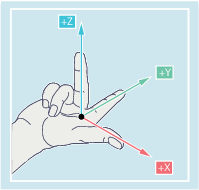
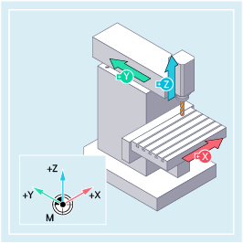
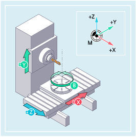

Das Maschinen-Koordinatensystem wird aus allen physikalisch vorhandenen Maschinenachsen gebildet.
Im Maschinen-Koordinatensystem sind Referenzpunkte, Werkzeug- und Palettenwechselpunkte (Maschinenfestpunkte) definiert.
Wenn direkt im Maschinen-Koordinatensystem programmiert wird (bei einigen G-Befehlen möglich), so werden die physikalischen Achsen der Maschine direkt angesprochen. Eine eventuell vorhandene Werkstückaufspannung wird dabei nicht berücksichtigt.
| Hinweis |
|
Falls es verschiedene Maschinen-Koordinatensysteme gibt (z. B. 5-Achs-Transformation), dann wird durch interne Transformation die Maschinenkinematik auf das Koordinatensystem abgebildet, in dem programmiert wird. |
Wie das Koordinatensystem relativ zur Maschine liegt, ist abhängig vom Maschinentyp.
Die Achsrichtungen folgen der sogenannten "Drei-Finger-Regel" der rechten Hand (nach DIN 66217):
Steht man vor der Maschine, so zeigt der Mittelfinger der rechten Hand gegen die Zustellrichtung der Hauptspindel. Er zeigt somit die Richtung +Z.
Der Daumen zeigt die Richtung +X.
Der Zeigefinger zeigt die Richtung +Y.

Drehbewegungen um die Koordinatenachsen X, Y und Z werden mit A, B und C bezeichnet. Der Drehsinn der Drehung ergibt sich aus der Richtung der Drehbewegung bei Blick in die positive Richtung der Koordinatenachse:
Richtung der Drehbewegung | Drehsinn |
|---|---|
im Uhrzeigersinn | positiv |
gegen den Uhrzeigersinn | negativ |
X, Y, Z | Senkrecht aufeinanderstehende Koordinatenachsen |
A, B, C | Rundachsen, um X, Y, Z drehend |
Die Lage des Koordinatensystems, die sich aus der "Drei-Finger-Regel" ergibt, kann bei unterschiedlichen Maschinentypen unterschiedlich ausgerichtet sein, wie die beiden folgenden Beispiele zeigen:
|  Vertikale 3-Achsen-Fräsmaschine |  Horizontale 4-Achsen-Fräsmaschine |
Siehe auch:
Übersicht der verschiedenen Koordinatensysteme
Wie hängen die verschiedenen Koordinatensysteme zusammen?